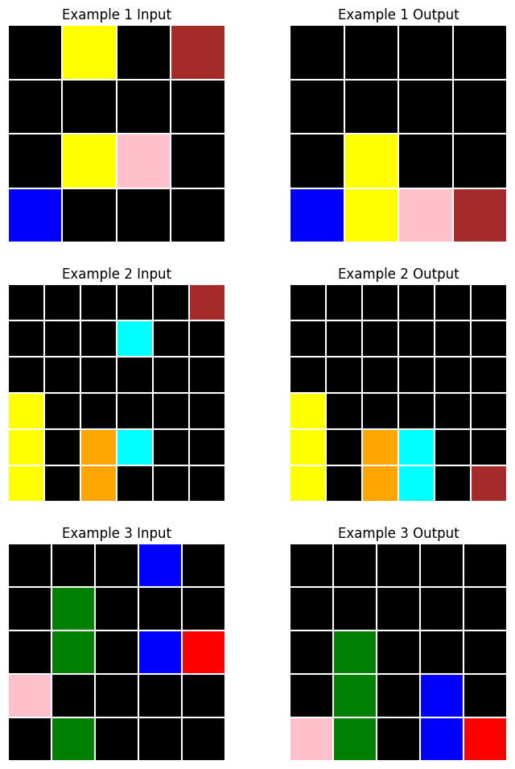
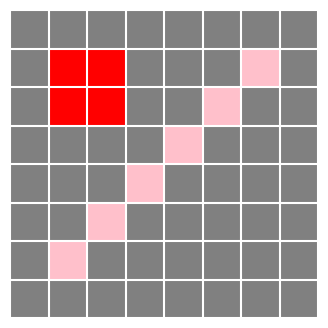

from arcsolver.task import ArcGrid, ArcPair, ArcTask
task = ArcTask('1e0a9b12'); task.plot()
This library contains tools for visualizing, analyzing and solving tasks from the Abstraction and Reasoning Corpus (ARC) challenge dataset.
As this library was built using nbdev, the source code can be found in the jupyter notebooks directory (nbs).
Full documentation available at https://agemoai.github.io/arcsolver.
claudette from its GitHub repository (PyPi version is a bit behind):arcsolver:To use the automated description or solution generation features of this library, access to Anthropic’s Claude Sonnet 3.5 model is required. Set the ANTHROPIC_API_KEY environment variable or configure appropriate credentials for AWS bedrock or Google Vertex.
ArcTask classThe task module provides classes for working with ARC tasks
An ArcTask comprises a list of input-output example ArcPairs, each of which holds two ArcGrids. Each class has convenient plot methods for visualization or directly outputting to binary strings that can be passed to Claude.
The ocm module provides a set of primitive classes for constructing object-centric models of ARC grids. For example:
from arcsolver.ocm import Vector, Rectangle, Line, Grid, Color, Direction
grid = Grid(
size=Vector(8,8),
background_color=Color('grey'),
objects=[
Rectangle(position=Vector(1,1), size=Vector(2,2), color=Color('red')),
Line(position=Vector(6,1), direction=Direction.NE, length=6, color=Color('pink'))
]
)
ArcGrid(grid.to_array()).plot()
Use Claude to analyze and describe ARC tasks
The input grids contain various colored squares arranged on a black background in different positions. In the transformation, all colored squares “fall” vertically to the bottom row while maintaining their relative horizontal positions and original colors. The rest of the grid becomes filled with black squares, resulting in an output where all non-black squares are aligned in the bottom row, preserving their left-to-right ordering from the input grid.
Depending on the task and the description strategy used (see docs), DescriptionGenerator may decompose the task into multiple images, resulting in a token-intensive prompt (~$0.10 using Sonnet 3.5).
Use Claude to construct a solution to an ARC task, automatically refining its attempts based on execution and prediction error feedback.
Solving task: 1e0a9b12
Generating descriptions... | Attempts: 0/30 | Best Score: 0.000 | Cost: $0.000
Starting solution attempts... | Attempts: 0/30 | Best Score: 0.000 | Cost: $0.142
Generating initial solutions... | Attempts: 0/30 | Best Score: 0.000 | Cost: $0.142
Testing solutions... | Attempts: 0/30 | Best Score: 0.000 | Cost: $0.231
Continuing refinement... | Attempts: 2/30 | Best Score: 0.866 | Cost: $0.231
Refining previous solutions... | Attempts: 2/30 | Best Score: 0.866 | Cost: $0.231
Testing solutions... | Attempts: 2/30 | Best Score: 0.866 | Cost: $0.332
Continuing refinement... | Attempts: 4/30 | Best Score: 0.904 | Cost: $0.332
Refining previous solutions... | Attempts: 4/30 | Best Score: 0.904 | Cost: $0.332
Testing solutions... | Attempts: 4/30 | Best Score: 0.904 | Cost: $0.424
Continuing refinement... | Attempts: 6/30 | Best Score: 0.951 | Cost: $0.424
Refining previous solutions... | Attempts: 6/30 | Best Score: 0.951 | Cost: $0.424
Testing solutions... | Attempts: 6/30 | Best Score: 0.951 | Cost: $0.528
Continuing refinement... | Attempts: 8/30 | Best Score: 0.951 | Cost: $0.528
Refining previous solutions... | Attempts: 8/30 | Best Score: 0.951 | Cost: $0.528
Testing solutions... | Attempts: 8/30 | Best Score: 0.951 | Cost: $0.633
Continuing refinement... | Attempts: 10/30 | Best Score: 0.958 | Cost: $0.633
Refining previous solutions... | Attempts: 10/30 | Best Score: 0.958 | Cost: $0.633
Testing solutions... | Attempts: 10/30 | Best Score: 0.958 | Cost: $0.732
Continuing refinement... | Attempts: 12/30 | Best Score: 0.965 | Cost: $0.732
Refining previous solutions... | Attempts: 12/30 | Best Score: 0.965 | Cost: $0.732
Testing solutions... | Attempts: 12/30 | Best Score: 0.965 | Cost: $0.835
Found potential solution, validating... | Attempts: 12/30 | Best Score: 1.000 | Cost: $0.835
Solution found! | Attempts: 14/30 | Best Score: 1.000 | Cost: $0.835
Solution found! 🎉 | Attempts: 14/30 | Best Score: 1.000 | Cost: $0.835Contributions are welcome! Refined prompts, new OCM primitives, expanded tool-use, alternative retry strategy…
Feel free to raise an issue or submit a PR.
To read about the motivation for building this tool, check out our blog and watch out for future posts